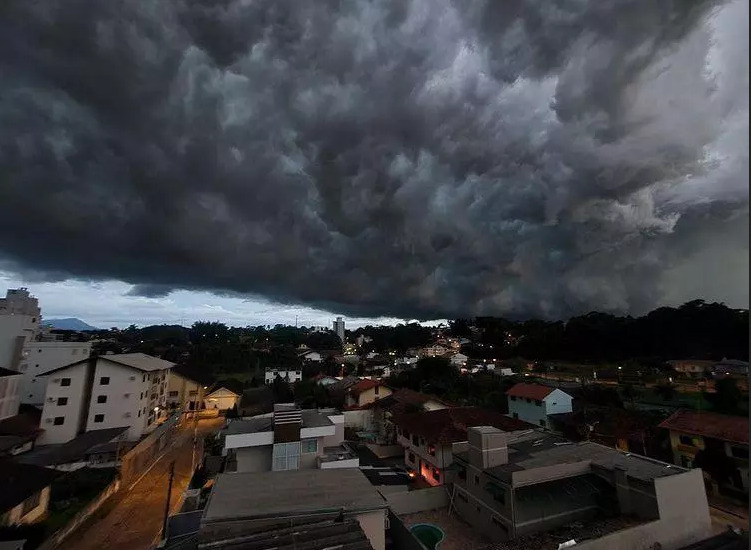
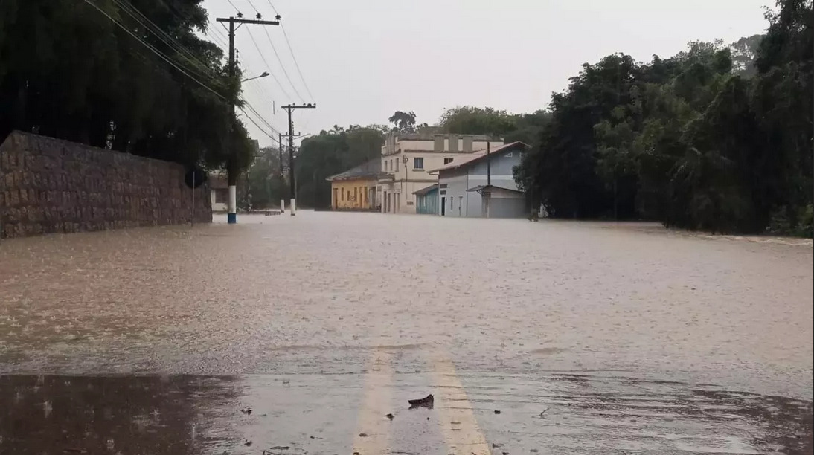

iDM
INÍCIO
LOGIN
NOTÍCIAS
INFORMAR INCIDENTE
CADASTRE-SE
ALERTAS
AJUDA
Últimas Notícias
Defesa Civil alerta para temporais em Blumenau nesta quinta e sexta-feira

Blumenau e grande parte do Médio Vale do Itajaí está em área de risco alto para os temporais. Além do Médio Vale, o Alto Valedo Itajaí, Planalto Sul e o Meio-Oeste também estão com grandes riscos. Nas demais regiões de Santa Catarina o risco é moderado.
Chuva forte atinge RS e SC, causa alagamentos e há risco de cheias

Volumes muito altos de chuva são registrados desde ontem em diferentes pontos da Metade Norte do Rio Grande do Sul com a formação de uma frente quente sobre o território gaúcho e que, além de muita chuva, trouxe também temporais de vento forte e granizo em diferentes cidades do Noroeste e do Norte gaúcho e de Santa Catarina.
Prédio no Bairro do Recife corre risco de desabar
Vizinhos do prédio, comerciantes sentem prejuízo após uma semana interditados pelo risco de desabamento